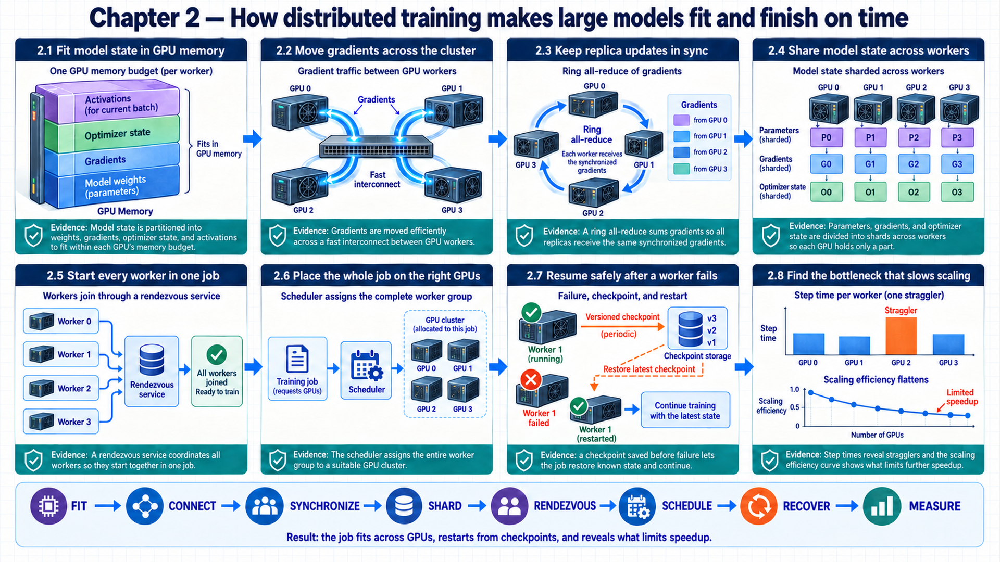
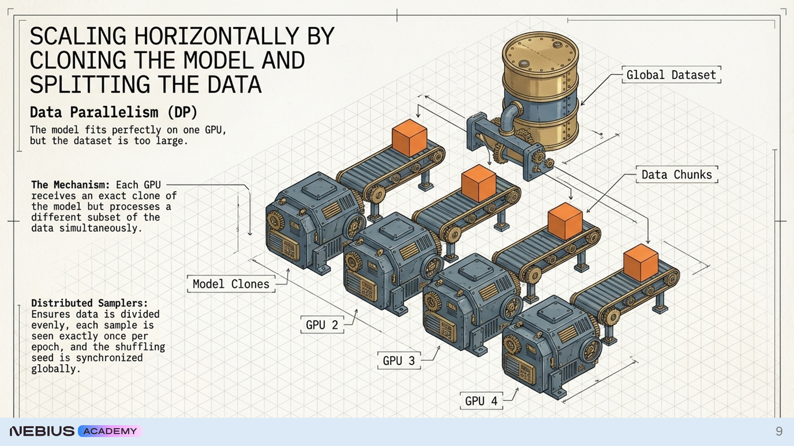
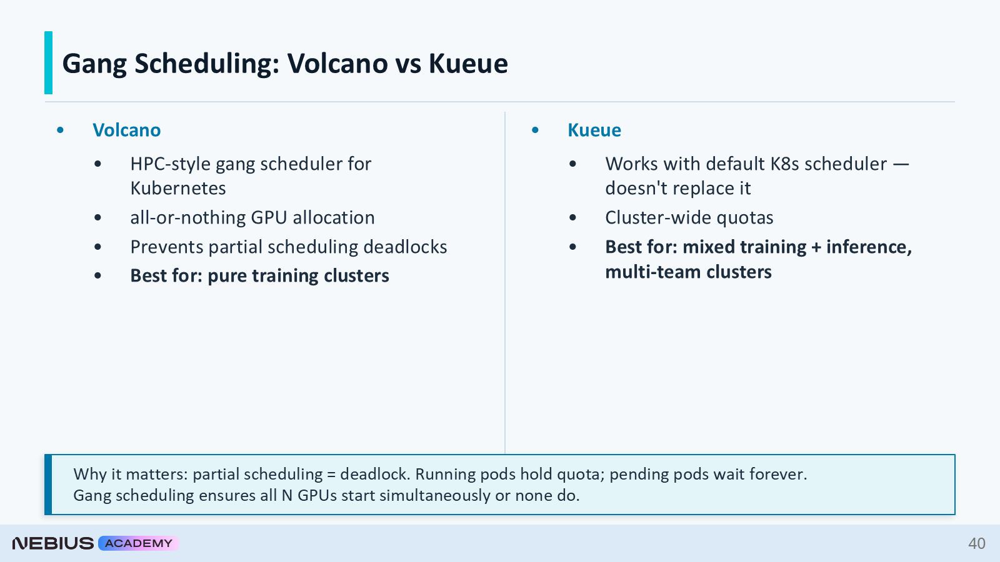
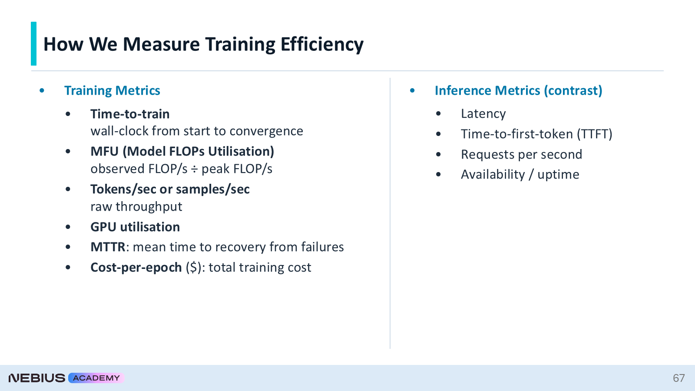

2 Distributed training across devices and clusters
How can one training job use many GPUs without turning communication, scheduling, or failure into the real bottleneck? Chapter 1 defined the versioned artifacts and software layers around a run. Single-GPU limits lead to network and process identities, then to recoverable distributed execution and measurement.
The map moves from the limits of an individual accelerator to coordinated workers, then to the recovery and efficiency measures that make a long run practical.
Chapter map: distributed cluster training
This chapter scales model training from single devices to distributed clusters:
- 2.1–2.2 Memory Limits & Interconnects: Analyze single-GPU memory bounds across weights, optimizer states, and activations, and evaluate PCIe, NVLink, and InfiniBand network hierarchies.
- 2.3–2.4 Gradient Synchronization & State Sharding: Trace PyTorch DDP gradient synchronization, using ring all-reduce as an illustrative communication algorithm, and compare tensor and pipeline parallelism with Zero Redundancy Optimizer (ZeRO) and Fully Sharded Data Parallel (FSDP) model-state sharding.
- 2.5–2.6 Worker Coordination & Gang Scheduling: Manage process group rendezvous, world size, and ranks, and configure Kubernetes gang scheduling and topology-aware pod placement.
- 2.7–2.8 Fault Recovery & Hardware Efficiency: Structure distributed checkpoint recovery and atomic resumption, and measure Model FLOPs Utilization (MFU) to diagnose cluster stragglers.

2.1 Accounting for single-GPU memory use
A reproducible run can still be physically impossible on one device. Model state, optimizer state, and activations must fit before the run can finish in an acceptable time. These memory objects reveal which parallelism strategies can satisfy the constraint.
Device: One accelerator visible to a training process, such as one NVIDIA GPU.
Server or node: One physical or virtual machine containing CPUs, host memory, storage interfaces, networking, and one or more devices.
\[ M_{\mathrm{train}} ≈ P\left(b_w + b_g + b_{\mathrm{master}} + b_{\mathrm{opt}}\right) + A \tag{2.1}\]
Memory breakdown: 8-billion-parameter model with Adam optimizer
This illustrative layout assumes BF16 weights and gradients, FP32 master weights, and two FP32 Adam moments. Sizes use decimal GB. Other mixed-precision implementations can use different persistent layouts:1
- Weights: Eight billion BF16 weights at 2 bytes each require 16 GB.
- Gradients: BF16 gradients add 16 GB.
- Master weights: Eight billion FP32 master weights at 4 bytes each add 32 GB.
- Adam state: Two FP32 moment buffers use 8 bytes per parameter and add 64 GB.
- Persistent subtotal: Weights, gradients, master weights, and Adam state total 128 GB before activations, temporary buffers, and allocator reserve.
- Activations: For illustration, 40 GB at a short micro-batch gives about 168 GB total, while 160 GB at a longer sequence or larger micro-batch gives about 288 GB. A profiler or shape-based activation estimate supplies the value for a real run.
- Conclusion: A model with 8 billion parameters that is easy to load for inference can require multiple high-memory GPUs for ordinary Adam training.

The second limit is elapsed time. Data parallelism can increase sample or token throughput when useful work outweighs communication and synchronization cost. At fixed global batch size this is a time-per-step comparison. Increasing global batch size can change convergence, so throughput alone does not establish time to a target quality. Model sharding addresses memory, data replication addresses throughput. Large jobs usually combine both.
2.2 Matching communication paths to model traffic
Memory accounting explains why multiple devices are necessary. Devices cannot cooperate until the system distinguishes physical links, the communication library, the framework API, and the parallelism strategy. The stack runs from physical links through communication software to the parallelism strategy.
Distributed training uses four different kinds of technology:
- Physical fabric: PCIe, NVLink/NVSwitch, InfiniBand, RoCE, or Ethernet moves bytes between devices or nodes.
- Communication library (
backend): NCCL implements GPU collectives and selects supported transport paths2, while Gloo or MPI cover other process and data patterns. - Framework API:
torch.distributedcreates process groups and exposes collectives to PyTorch code. - Parallelism strategy: DDP, Fully Sharded Data Parallel (FSDP), tensor parallelism, pipeline parallelism, context parallelism, or expert parallelism decides which state and computation are split.
NVLink is not NCCL. NVLink is a high-bandwidth GPU interconnect whose domain can span one or multiple servers.3 NCCL is a software library that may use NVLink, InfiniBand, RoCE, or sockets. torch.distributed is not a physical network either. It is the PyTorch API that requests collective operations from the configured backend.
| Connection type | Typical scope | Why placement matters |
|---|---|---|
| PCIe / NVLink / NVSwitch | High-bandwidth domain; NVLink can span multiple servers | Tensor-parallel communication can occur every layer and needs very high bandwidth. |
| InfiniBand / RoCE | Between servers | Data, pipeline, or context groups exchange gradients, activations, or KV state across nodes. |
| Ethernet sockets | Control or fallback data path | Functional for rendezvous and small transfers but often too slow for large synchronized tensors. |
Device placement example: placing a tensor-parallel group across fast interconnects
Mapping parallel process groups to physical interconnects prevents cross-node communication bottlenecks:
- Tensor payload: Four tensor-parallel ranks exchange layer outputs on nearly every transformer layer.4
- Fast local fabric: One server contains four GPUs connected through NVLink or NVSwitch, so the group remains inside that server.
- Across servers: In this simplified steady-state replicated-DDP example, the larger data-parallel group uses InfiniBand or RoCE for gradient synchronization. Initialization and buffer broadcasts also communicate, and sharded strategies additionally exchange parameters.
- Failure signal: If a tensor-parallel rank is placed across ordinary Ethernet, per-layer collective time rises and every downstream stage waits.
- Conclusion: Communication frequency and payload size determine which parallel group benefits most from the most suitable available link.
2.3 Gradient synchronization in distributed training
The communication stack now has distinct layers. The simplest scaling baseline is a full model replica on each device, with one consistent update shared across replicas. Data sharding, local backpropagation, all-reduce, and optimizer stepping form the update sequence.
- Distributed Data Parallel (DDP): A replicated-model strategy in which each process trains on a distinct batch shard and synchronizes gradients before applying the same optimizer update.
A DDP process owns one model replica and usually one GPU. A DistributedSampler assigns rank-specific indices. With its default drop_last=False, it pads uneven dataset sizes and can repeat indices across ranks. Setting sampler drop_last=True omits a tail instead. This policy differs from dropping a final incomplete DataLoader batch.5 During backpropagation, DDP groups parameter gradients into buckets and launches asynchronous all-reduce operations as soon as a bucket is ready.6 Overlap hides some communication behind the remaining backward computation.
\[ g_{\mathrm{global}} = \frac{\sum_{r=1}^{N} g_r}{N} \tag{2.2}\]
Gradient synchronization example: all-reduce across four ranks
A simple four-rank collective demonstrates all-reduce arithmetic across distributed workers:
- Local values: The same bucket component is 0.8, 1.2, 1.0, and 1.4 on ranks 0 through 3.
- Reduction: All-reduce sums the four values to 4.4.
- Average: Dividing by world size 4 produces a synchronized component value of 1.1.
- Update state: Every replica receives 1.1 before applying the optimizer step, and parameters remain aligned if initial model and optimizer states, update schedules, and scaler decisions also match.
- Conclusion: Distinct data shards may produce different local gradients, synchronization makes the optimizer input identical on every replica.
The equation does not require every implementation to perform a literal gather followed by division. Ring, tree, or hierarchical collective algorithms can produce the same result with different communication schedules.7
\[ B_{\mathrm{ring}} ≈ \frac{2 \cdot \left(N-1\right)}{N} \cdot G \tag{2.3}\]
Bandwidth calculation: ring all-reduce traffic for eight ranks
Calculating communication volume through a logical ring reveals per-rank bandwidth scaling:
- Gradient bucket: The synchronized bucket is 1 GB.
- Rank count: Eight ranks participate.
- Traffic: 2 × (8 - 1) ÷ 8 × 1 GB = 1.75 GB sent per rank, with another 1.75 GB received per rank.8
- Interpretation: That transfer repeats for many buckets each step, effective fabric bandwidth and overlap determine the exposed delay.
- Conclusion: A compute-light model can become communication-bound even when every GPU reports activity.

Code example: DDP sketch with default sampler padding. Uneven datasets can repeat indices; the launcher supplies identities and training code initializes the group.
import os
import torch
import torch.distributed as dist
from torch.nn.parallel import DistributedDataParallel as DDP
from torch.utils.data import DataLoader, DistributedSampler
dist.init_process_group(backend="nccl")
local_rank = int(os.environ["LOCAL_RANK"])
torch.cuda.set_device(local_rank)
model = DDP(build_model().cuda(local_rank), device_ids=[local_rank])
sampler = DistributedSampler(dataset, shuffle=True)
loader = DataLoader(dataset, sampler=sampler, batch_size=micro_batch)
for epoch in range(epochs):
sampler.set_epoch(epoch)
for batch in loader:
loss = model(batch.cuda(local_rank))
loss.backward()
optimizer.step()
optimizer.zero_grad(set_to_none=True)Code walkthrough: PyTorch DDP training step
The distributed training loop coordinates rank processes and gradient synchronization:
- Process group:
init_process_groupinitializes the training process group using identities and connection settings supplied by the launcher. - Device assignment:
LOCAL_RANKbinds this process and its model replica to one GPU on the node. - Data partition:
DistributedSamplerapplies the padding or dropping policy described above, andset_epochchanges the shuffle between epochs. Strict non-overlap requires an appropriate dataset-size and sampler policy. - Synchronization point:
loss.backward()activates DDP bucket hooks, andoptimizer.step()consumes the reduced gradients after the required collectives finish. - Result: Ranks compute on their assigned indices and, under aligned optimizer state, apply the same synchronized update. Default sampler padding can repeat examples.
- Limits: The compact loop omits mixed precision, gradient accumulation, checkpointing, validation, failure handling, and a sampler configuration for uneven dataset sizes.
2.4 Model-state sharding with ZeRO and FSDP
DDP increases throughput when one full training replica fits on each device. When persistent state or activations exceed device memory, replication is the wrong baseline. The constrained memory object determines what is sharded, and the resulting communication is placed on the available topology.
The strategy options address progressively harder memory and sequence constraints:
- FSDP or Zero Redundancy Optimizer stage 3 (ZeRO-3): shards parameters, gradients, and optimizer state across data-parallel ranks, gathering parameter shards when the configured module or parameter group executes. FSDP2 resharding policy controls residency, and activation memory remains a separate cost.9
- Tensor parallelism: splits matrix operations across devices and communicates partial results within each layer.
- Pipeline parallelism: places consecutive layer groups on stages and streams micro-batches through them.10
- Sequence and context parallelism: in Megatron terminology, sequence parallelism partitions selected activation operations alongside tensor parallelism, while context parallelism divides sequence work more broadly. They are related but different settings.11
- Expert parallelism: places Mixture-of-Experts sub-networks on different devices and routes tokens to their selected experts.12
FSDP reduces replicated state but increases parameter communication. Tensor parallelism reduces per-device matrix state but adds frequent collective operations. Pipeline parallelism reduces layer residency but creates bubbles when stages wait. Context and expert parallelism add workload-specific routing and balance problems. Large runs combine strategies only after measuring the simpler baseline.
| Condition | Initial strategy | Primary new cost |
|---|---|---|
| Model fits, training is too slow | DDP | Gradient all-reduce |
| Model barely misses one device | FSDP / ZeRO-3 | Parameter gather and reduce-scatter |
| Individual layers or matrices are too large | Tensor parallelism | Per-layer activation collectives |
| Layer stack is too large | Pipeline parallelism | Pipeline bubbles and activation transfer |
| Context dominates memory | Context/sequence parallelism | Attention communication and load balance |
| Sparse experts dominate model size | Expert parallelism | All-to-all token routing |
State sharding comparison: FSDP memory savings versus full replication
Sharding model states across ranks reduces per-GPU memory footprints in exchange for collective communication:
- Replicated baseline: Four DDP ranks each hold the complete 128 GB persistent-state subtotal from the Adam example with 8 billion parameters.
- Ideal four-way shard: Sharding parameters, gradients, master weights, and optimizer buffers divides that subtotal to about 32 GB per rank before temporary gathers and activations.
- Execution trace: Before one layer executes, each rank gathers the required parameter shards. After backward computation, reduce-scatter leaves each rank with its gradient shard.
- New constraint: Temporary all-gathers, activation memory, allocator reserve, and communication overlap still determine whether the run fits and performs well.
- Conclusion: Sharding changes state residency rather than making memory free. The saved persistent state is exchanged for temporary buffers and communication.

2.5 Coordinating workers through rendezvous
A selected strategy describes state placement. Processes still need unique identities and a common group before they can exchange any tensor. Ranks and rendezvous form the process group before its configured backend carries collective traffic.
Rank: The unique integer identity of one process inside a distributed process group.
World size: The total number of participating processes in that group.
Local rank: The process index within one node, commonly used to select the local GPU.
Rendezvous: The control-plane handshake through which processes discover one another, agree on membership, and obtain group metadata.
torchrun starts processes and supplies LOCAL_RANK, RANK, and WORLD_SIZE.13 A store reachable through MASTER_ADDR and MASTER_PORT coordinates rendezvous. The training process initializes the collective group. NCCL communicator formation can be eager or lazy depending on the API arguments14, and the rendezvous store is not the channel carrying every gradient. The example below uses static launch settings, and ranks need not remain stable across elastic restarts.

Code example: Two-node torchrun launch definition for sixteen training processes.
torchrun \
--nnodes=2 \
--nproc-per-node=8 \
--node-rank="${NODE_RANK}" \
--master-addr="${MASTER_ADDR}" \
--master-port=29500 \
train.pyCode walkthrough: multi-node torchrun invocation
The launcher CLI coordinates cluster rendezvous and process rank binding:
- Cluster shape:
--nnodes=2and--nproc-per-node=8declare sixteen expected processes. - Node identity:
--node-rankgives each launcher a unique identity within the rendezvous. - Rendezvous endpoint: The master address and port identify the shared control endpoint used to form the process group.
- Injected state:
torchrunsupplies global rank, local rank, and world size to eachtrain.pyprocess. - Result: The launcher describes membership, the training program still initializes the process group and binds each local rank to a GPU.
- Limits: Both nodes share rendezvous settings, reachable networking, matching code and environment, and a scheduler allocation that starts the full group.
Rendezvous diagnosis: root causes of distributed hangs
Process synchronization failures during initialization often appear as unresponsive jobs:
- A wrong rank count, unreachable master address, blocked port, or partially scheduled job often looks like a hang because processes wait for missing peers.
- Process identities and control-plane connectivity are the first checks because either can create a hang before NCCL bandwidth becomes relevant.
2.6 Workload scheduling on GPU clusters
Rendezvous requires every expected rank to appear. A cluster scheduler that starts only part of a multi-node job can therefore consume GPUs while making no progress. A complete scheduling setup exposes devices, admits the full worker group together, and isolates resources.
In the illustrated NVIDIA device-plugin setup, the host driver, container runtime integration, and device plugin expose nvidia.com/gpu to Kubernetes.15 A pod requests an integer device count, labels and node affinity select the GPU family, while taints keep ordinary CPU workloads from occupying expensive GPU nodes.

Code example: Two-worker NVIDIA resource sketch. Eight advertised units mean whole GPUs only in the assumed non-sharing configuration.
apiVersion: batch/v1
kind: Job
metadata:
name: ddp-worker
spec:
completions: 2
parallelism: 2
template:
spec:
restartPolicy: Never
tolerations:
- key: nvidia.com/gpu
operator: Exists
effect: NoSchedule
affinity:
nodeAffinity:
requiredDuringSchedulingIgnoredDuringExecution:
nodeSelectorTerms:
- matchExpressions:
- key: accelerator.fabric
operator: In
values: [nvlink]
containers:
- name: trainer
image: registry.example/trainer@sha256:...
resources:
requests:
nvidia.com/gpu: 8
limits:
nvidia.com/gpu: 8Code walkthrough: Kubernetes distributed worker manifest
The declarative pod specification defines resource allocation and cluster scheduling:
- Replica state:
completionsandparallelismrequest two worker pods, but the base Job object does not give them distributed rank identities. - GPU admission: Matching request and limit values request eight advertised GPU resources for each worker. Interpreting these as eight whole GPUs assumes non-sharing device-plugin configuration.
- Placement permission: The toleration allows the worker onto nodes protected by the GPU taint, node labels or affinity would further constrain GPU type.
- Artifact identity: The image digest makes both workers execute the same immutable training environment.
- Result: The manifest declares resources for sixteen GPUs, while a gang scheduler and launcher coordinate all-or-nothing admission and rendezvous.
- Limits: A complete deployment also needs worker indexing, service discovery, volumes, security context, retry policy, and a distributed-job controller or scheduler integration.
- Gang scheduling: A policy that admits a configured minimum worker group together. It represents the complete job only when configured that way, and admission does not guarantee simultaneous application readiness.16
Code example: Illustrative Volcano minimum group of two workers and sixteen GPU resources. Admission does not establish simultaneous application readiness.
apiVersion: scheduling.volcano.sh/v1beta1
kind: PodGroup
metadata:
name: ddp-two-node
spec:
minMember: 2
minResources:
nvidia.com/gpu: "16"
Volcano provides HPC-style gang scheduling, while Kueue adds queue and quota management around the default Kubernetes scheduler.17 SkyPilot abstracts resource provisioning across clouds and clusters.18 Slurm provides mature queueing and accounting19, Soperator runs the Slurm control plane on Kubernetes so Slurm manages jobs while Kubernetes manages pods and nodes.20
2.7 Recovering distributed jobs from checkpoints
Configured gang admission reserves the required worker group before startup. At cluster scale, hardware, network, process, and preemptible-capacity failures make a long uninterrupted run unlikely. The acceptable progress loss and recovery time determine checkpoint frequency, layout, and persistence.
Recovery Point Objective (RPO): The maximum amount of completed training progress the system may lose after a failure.
Recovery Time Objective (RTO): The maximum acceptable time between failure and resumed useful training.21
A resumable checkpoint includes model parameters, optimizer and scheduler state, step or epoch, precision-scaler state when used, and rank-specific random-number and data-position state when exact sample order matters. The application must supply this state and test format/version compatibility.22 DDP may let rank 0 save the unwrapped model, while sharded strategies require a compatible distributed-checkpoint format.

A fast path writes shards to host memory or local NVMe, returns GPU control quickly, and copies asynchronously to shared or object storage. Local media can survive some process or host restarts, but does not cover loss of that machine. Node-loss recovery is available only after the required durable remote copy completes.
The following publication protocol relies on immutable generations, durable storage, and a coordinator whose conditional updates reject stale writers:
- Write a temporary generation. Every rank writes its shard under a generation-specific temporary prefix, the live restore pointer remains unchanged.
- Verify the generation. The coordinator checks the expected shard count, file hashes, training step, model configuration, and writer completion from every rank.
- Validate a durable candidate. Complete the required remote copies, then let a test reader reconstruct model, optimizer, scheduler, scaler, random state, and data position from a candidate manifest. The live restore pointer still refers to the previous approved generation.
- Publish the restore-approved record. Atomically and conditionally advance the durable restore pointer to the immutable, tested manifest. A stale coordinator must fail its precondition.23 After an uncertain acknowledgement, read back the committed generation before retrying. Object-store single-key atomicity does not make the shard set a multi-object transaction.24
- Ignore incomplete state. A missing shard or absent commit record leaves the previous committed generation as the restore target.
Checkpoint sizing example: interval from an average lost-work budget
This illustrative constraint calculation is not an optimization and does not establish an RPO:
- Run cost: Assume an illustrative price of $180 per GPU-hour for a 64-GPU job, or $11,520 per wall-clock hour.
- Allowed average lost work: The team accepts at most 15 minutes on average.
- Periodic-failure assumption: A failure is equally likely within one checkpoint interval, so average lost work is approximately half the interval.
- Interval: To keep the average at 15 minutes, use a 30-minute useful-compute interval under the simplified assumption that failure occurs uniformly within useful computation, ignoring persistence lag and failures during saving. Worst-case lost work can approach the whole interval plus that lag.
- I/O check: A 4-minute synchronous save after 30 useful minutes consumes 4 ÷ 34 \(\approx\) 11.8% of the cycle. Asynchronous persistence is one option to reduce this pause, but its extra memory, background load, and durable-copy lag must be measured.
- Conclusion: Checkpoint frequency is an economic and recovery decision constrained by storage throughput.
2.8 Measuring scaling efficiency and diagnosing stragglers
A recoverable job can survive expected failure. It may still waste accelerators through data starvation, synchronization, pipeline bubbles, or unstable numerics. Useful-work measurements and training, GPU, and communication evidence localize the delay.
\[ \mathrm{MFU} = \frac{F_{\mathrm{observed}}}{F_{\mathrm{peak}}} \tag{2.4}\]
MFU calculation: Model FLOPs Utilization for an eight-GPU cluster
Comparing observed floating-point throughput against hardware peak quantifies compute efficiency:
- Observed work per token: For an illustrative model and training objective, the useful forward/backward model arithmetic estimate is 120 GFLOPs per processed token, excluding recomputation.25
- Measured throughput: The eight-GPU run processes 20,000 tokens each second.
- Observed rate: 20,000 tokens/s × 120 GFLOPs/token = 2.4 PFLOPs/s of model arithmetic.
- Relevant peak: Eight devices provide an assumed combined 8.0 PFLOPs/s dense peak at the run precision. The throughput window includes input and collective waits but excludes startup and checkpoint pauses in this example.
- Utilization: Dividing 2.4 by 8.0 gives 0.30, or 30% MFU.
- Diagnosis: The remaining 70% may come from input wait, memory traffic, kernels, collectives, imbalance, or bubbles, it is not automatically communication loss.
- Conclusion: MFU quantifies the gap, while correlated timelines and counters identify where the lost time originates.
GPU utilization alone can be misleading because a device may report activity while waiting on memory or communication.26 Throughput, MFU, power draw, memory-bandwidth utilization, NVLink or InfiniBand traffic, step-time variance, and collective traces provide the comparison. A straggler slows every synchronized rank.
Timeline diagnosis: identifying straggler ranks
Analyzing per-rank execution phases exposes load imbalance across cluster workers:
- Ranks 0–6 finish input loading in 45 ms, while rank 7 takes 130 ms, all ranks then enter the same 70 ms all-reduce.
- In this illustrative timing model, the early ranks wait 85 ms and then transfer for 70 ms, so their collective spans last 155 ms. Rank 7 records only the 70 ms transfer. The unequal pre-collective gap identifies input or host work on rank 7 as the first cause to investigate.

The symptom table connects each visible training failure to the evidence and owner that can explain it.
| Symptom | Evidence to inspect | Likely component |
|---|---|---|
| All ranks hang before first step | Rank/world-size logs, rendezvous port, scheduler state | Launcher or scheduler |
| Throughput stops scaling | NCCL traces, fabric counters, compute/communication overlap | Communication topology or parallelism |
| GPU utilization high, power low | Memory bandwidth, data-loader time, collective wait | Input path or synchronization |
| Periodic idle stages | Per-stage timeline and micro-batch count | Pipeline-parallel schedule |
| Loss spikes or NaNs | Gradient norms, precision state, XID/ECC errors | Numerics or hardware |
| Resume fails | Checkpoint manifest, shard count, code/config identity | Checkpoint writer and artifact lineage |
Chapter 2 summary
Key distributed platform principles and tradeoffs established in this chapter:
- Core mechanisms: PyTorch DDP gradient synchronization with ring all-reduce as an illustrative algorithm, ZeRO-1/2/3 and FSDP model-state sharding, c10d rendezvous process groups, Kubernetes gang scheduling.
- Governing tradeoffs: All-reduce communication overhead vs. memory savings, sharding granularities vs. all-gather bandwidth saturation, MFU vs. cluster scale.
- Failure modes & defenses: Validated checkpoint publication and configured group admission that reduces wasted partial allocations, without promising freedom from later failures or deadlocks.
Chapter checkpoint
Review the self-study questions in Appendix C, Section C.1 (Questions 3, 4, and 5) to test understanding of memory accounting, ring all-reduce communication, gang scheduling, and checkpoint recovery before proceeding to serving architectures.
Carry-forward result
The healthy path is now complete: versioned inputs start as one allocation, each rank receives indices under an explicit sampler padding or dropping policy, collectives produce consistent updates, checkpoints cross failure domains, and measurements show useful work. The next chapter changes the workload from synchronized training steps to independent user requests with persistent KV-cache state.
Rajbhandari, S., Rasley, J., Ruwase, O., & He, Y. (2020). ZeRO: Memory optimizations toward training trillion parameter models (arXiv:1910.02054v3, May 13, 2020). arXiv. Source. ZeRO Section 3.1 motivates mixed-precision model-state accounting. The listed 2+2+4+8 byte layout and activation numbers are explicit illustrative assumptions, not every BF16 Adam implementation. Link checked September 16, 2026.↩︎
NVIDIA. (n.d.). Overview of NCCL. NCCL user guide. Source. NCCL documents collective and point-to-point communication over supported interconnects. The physical link and framework API are separate layers. Link checked September 16, 2026.↩︎
NVIDIA. (n.d.). Overview. NVIDIA IMEX Service for NVLink Networks. Source. NVIDIA IMEX documents multi-node NVLink domains. The four-GPU local-server placement remains only an example. Link checked September 16, 2026.↩︎
Shoeybi, M., Patwary, M., Puri, R., LeGresley, P., Casper, J., & Catanzaro, B. (2019). Megatron-LM: Training multi-billion parameter language models using model parallelism (arXiv:1909.08053). arXiv. Source. Megatron-LM describes frequent intra-layer communication. Exact collectives and payloads depend on the layer partition rather than always exchanging full outputs. Link checked September 16, 2026.↩︎
PyTorch Contributors. (n.d.). torch.utils.data. PyTorch 2.8 documentation. Source. PyTorch 2.8 DistributedSampler documents default padding, drop_last, and set_epoch. The sampler controls indices, not all worker transforms or restart randomness. Link checked September 16, 2026.↩︎
PyTorch Contributors. (n.d.). Distributed Data Parallel. PyTorch 2.8 documentation. Source. The PyTorch 2.8 design note describes ready-bucket reductions and overlap. Matching updates also require aligned model/optimizer state and update logic. Link checked September 16, 2026.↩︎
NVIDIA. (n.d.). Environment variables. NCCL 2.24.3 documentation. Source. NCCL_ALGO documents multiple algorithm choices and automatic selection. Ring is not a mandatory DDP algorithm. Link checked September 16, 2026.↩︎
Rajbhandari, S., Rasley, J., Ruwase, O., & He, Y. (2020). ZeRO: Memory optimizations toward training trillion parameter models (arXiv:1910.02054v3, May 13, 2020). arXiv. Source. ZeRO’s communication accounting supports ring reduce-scatter plus all-gather volume. This is sent volume and separately received volume, not measured elapsed time. Link checked September 16, 2026.↩︎
PyTorch Contributors. (n.d.). torch.distributed.fsdp.fully_shard. PyTorch 2.8 documentation. Source. PyTorch 2.8 fully_shard documents parameter-group all-gather, gradient reduce-scatter, and reshard_after_forward. It is FSDP2-specific, not every FSDP1 policy. Link checked September 16, 2026.↩︎
Narayanan, D., Shoeybi, M., Casper, J., LeGresley, P., Patwary, M., Korthikanti, V. A., Vainbrand, D., Kashinkunti, P., Bernauer, J., Catanzaro, B., Phanishayee, A., & Zaharia, M. (2021). Efficient large-scale language model training on GPU clusters using Megatron-LM (arXiv:2104.04473v5). arXiv. Source. Megatron-LM describes tensor/data/pipeline composition and pipeline bubbles on its tested clusters. It does not establish one optimal topology for all models. Link checked September 16, 2026.↩︎
NVIDIA. (n.d.). Parallelisms guide. Megatron Bridge documentation. Source. The Megatron Bridge guide distinguishes sequence parallelism from context parallelism. These are implementation-specific terms, not interchangeable switches. Link checked September 16, 2026.↩︎
Fedus, W., Zoph, B., & Shazeer, N. (2022). Switch Transformers: Scaling to trillion parameter models with simple and efficient sparsity. Journal of Machine Learning Research, 23(120), 1–39. Source. Switch Transformers gives an original sparse expert-routing and load-balancing example. Other systems can select a different number of experts per token. Link checked September 16, 2026.↩︎
PyTorch Contributors. (n.d.). torchrun (Elastic Launch). PyTorch 2.8 documentation. Source. PyTorch 2.8 documents the launcher environment and restart rules. Worker rank is not a durable identity across elastic restarts. Link checked September 16, 2026.↩︎
PyTorch Contributors. (n.d.). Distributed communication package: torch.distributed. PyTorch 2.8 documentation. Source. PyTorch 2.8 init_process_group documents device_id-triggered eager NCCL formation. No fixed post-return initialization order is promised. Link checked September 16, 2026.↩︎
Kubernetes Authors. (n.d.). Schedule GPUs. Kubernetes documentation. Source. The official GPU scheduling guide supports this setup. It is not a definition for all vendors, allocation interfaces, or sharing configurations. Link checked September 16, 2026.↩︎
Volcano Authors. (n.d.). Gang. Volcano documentation. Source. Volcano gang admission is governed by a configured minimum group. Startup, rendezvous, and later application failure are separate. Link checked September 16, 2026.↩︎
Kubernetes SIG Scheduling. (n.d.). Overview. Kueue documentation. Source. Kueue controls admission and quota without replacing pod-to-node scheduling. Readiness timeout policy is distinct from simultaneous placement. Link checked September 16, 2026.↩︎
SkyPilot Team. (n.d.). SkyPilot: Manage all your AI compute. SkyPilot Docs. Source. The project documentation describes resource management scope. This is not a claim of universal provider availability or optimal cost. Link checked September 16, 2026.↩︎
SchedMD. (n.d.). Slurm workload manager: Overview. Source. The Slurm overview describes allocation, job execution, monitoring, and queue arbitration. No current product-performance comparison is made. Link checked September 16, 2026.↩︎
Nebius. (n.d.). Soperator: Run Slurm in Kubernetes Source. Soperator documents operating Slurm in Kubernetes. Deployment commands still need a selected release/commit and tested environment. Link checked September 16, 2026.↩︎
Swanson, M., Bowen, P., Phillips, A. W., Gallup, D., & Lynes, D. (2010, May; updated November 11, 2010). Contingency planning guide for federal information systems (NIST SP 800-34 Rev. 1). National Institute of Standards and Technology. Source. NIST SP 800-34 Rev. 1 defines recovery objectives. Here RPO and RTO are adapted to training progress and useful resumption, not asserted achieved guarantees. Link checked September 16, 2026.↩︎
PyTorch Contributors. (2025, June 16). Distributed Checkpoint: torch.distributed.checkpoint. PyTorch 2.8 documentation. Source. PyTorch 2.8 distributed checkpoint saves supplied state and warns about cross-version compatibility. It does not discover every application state or implement the surrounding publication protocol. Link checked September 16, 2026.↩︎
Amazon Web Services. (n.d.). How to prevent object overwrites with conditional writes (Amazon S3 User Guide). Official source. S3 conditional writes supply object-level create/update preconditions. Durable winner selection, restore tests, and recovery logic remain application responsibilities. Link checked September 16, 2026.↩︎
Amazon Web Services. (n.d.). What is Amazon S3? Amazon Simple Storage Service User Guide. Source. The S3 consistency model documents atomic updates to one key, not cross-key transactions. The preceding recovery protocol adds application-level conditions. Link checked September 16, 2026.↩︎
Chowdhery, A., Narang, S., Devlin, J., Bosma, M., Mishra, G., Roberts, A., Barham, P., Chung, H. W., Sutton, C., Gehrmann, S., Schuh, P., Shi, K., Tsvyashchenko, S., Maynez, J., Rao, A., Barnes, P., Tay, Y., Shazeer, N., Prabhakaran, V., … Fiedel, N. (2023). PaLM: Scaling language modeling with pathways. Journal of Machine Learning Research, 24(240), 1–113. Source. PaLM Section 4.1 and Appendix B define useful model forward/backward FLOPs separately from rematerialization. Compare with a stated precision and dense/sparse hardware peak. Link checked September 16, 2026.↩︎
NVIDIA. (n.d.). NVIDIA System Management Interface. Source. NVIDIA-SMI utilization is kernel-active sample time, not fraction of peak arithmetic. Waiting within an active kernel differs from a completely idle device. Link checked September 16, 2026.↩︎